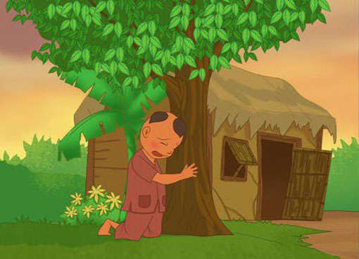
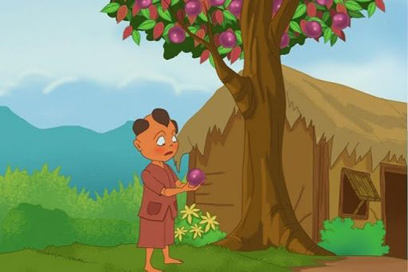
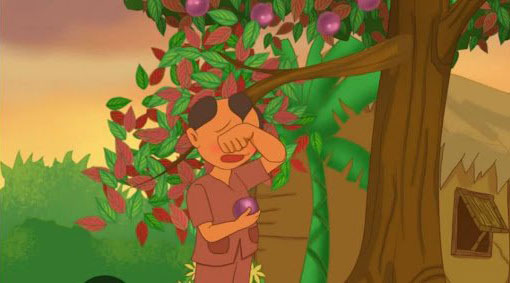

TRUYỆN CỔ TÍCH: "SỰ TÍCH CÂY VÚ SỮA"
Ngày đăng: 19/05/2024
Ngày xưa, có một cậu bé được mẹ cưng chiều nên rất nghịch và ham chơi, không nghe lời mẹ. Một lần, bị mẹ mắng, cậu giận mẹ bỏ đi. Cậu la cà, dạo chơi khắp nơi, mẹ cậu ở nhà không lo lắng biết cậu ở đâu nên rất buồn. Bà ngày ngày mẹ ngồi ở bậc cửa ngóng con trở về.

Thời gian trôi qua mà cậu vẫn không về. Vì quá đau buồn và kiệt sức, mẹ cậu mất. Không biết cậu đã đi bao lâu. Một hôm, vừa đói vừa rét, lại bị trẻ lớn hơn đánh, cậu mới nhớ đến mẹ.
-Phải rồi, khi mình đói, mẹ vẫn cho mình ăn, khi mình bị đứa khác bắt nạt, mẹ vẫn bảo vệ mình, về với mẹ thôi.
Cậu vội tìm đường về nhà. Ở nhà, cảnh vật vẫn như xưa, nhưng không thấy mẹ đâu. Cậu gọi mẹ:
-Mẹ ơi, mẹ đi đâu rồi, con đói quá ! -Cậu gục xuống, ôm một cây xanh trong vườn mà khóc.

Kỳ lạ thay, cây xanh đó bỗng run rẩy. Từ các cành lá, những đài hoa be bé trổ ra, nở trắng như mây. Hoa tàn, quả xuất hiện, lớn nhanh, da căng mịn, xanh óng ánh. Cây nghiêng cành, một quả to mọng rơi vào tay cậu bé.
Cậu bé cắn một miếng thật to, câu thốt lên:
-Chát quá!
Quả thứ hai rơi xuống. Cậu lột vỏ, cắn vào hạt quả. Cậu thốt lên:
-Cứng quá!
Quả thứ ba rơi xuống. Cậu khẽ bóp quanh quanh quả, lớp vỏ mềm dần rồi khẽ nứt ra một kẻ nhỏ. Một dòng sữa trắng sóng sánh trào ra, ngọt thơm như sữa mẹ.
Cậu bé ghé môi hứng lấy dòng sữa ngọt ngào, thơm ngon như sữa mẹ.

Cây rung rinh cành lá, thì thào:
- Ăn trái ba lần mới biết trái ngon. Con có lớn khôn mới hay lòng mẹ.
Cậu oà lên khóc. Mẹ đã không còn nữa. Cậu nhìn lên tán lá, lá một mặt xanh bóng, mặt kia đỏ hoe như mắt mẹ khóc chờ con. Cậu ôm lấy thân cây mà khóc, thân cây xù xì, thô ráp như đôi bàn tay làm lụng của mẹ.
Nước mắt cậu rơi xuống gốc cây. Cây xòa cành ôm cậu, rung rinh cành lá như tay mẹ âu yếm vỗ về đứa con thân yêu.

Cậu kể cho mọi người nghe chuyện về người mẹ và nỗi ân hận của mình…
Trái cây thơm ngon ở vườn nhà cậu, ai cũng thích. Họ đem về gieo trồng khắp nơi và đặt tên là Cây Vú Sữa.
Truyện kể về cậu bé ham chơi bỏ nhà đi khiến cho mẹ buồn bã mất đi. Khi cậu trở về quanh sân nhà chỉ còn lại một cái cây với loại quả cho dòng sữa ngọt ngào, thơm ngon như sữa mẹ. Sau đó được mọi người gọi là cây vú sữa. Câu chuyện nhắc nhở chúng ta về đạo làm con phải đặt chữ “hiếu” lên trên hết. Và với con cái, bố mẹ luôn bao dung, yêu thương, che chở dù con cái sai lầm gì.